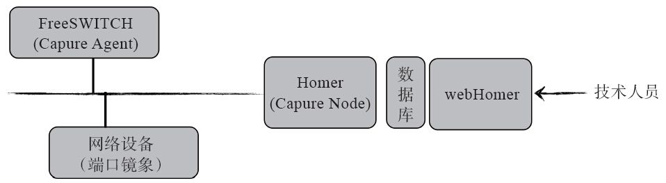

9.3 常用命令
mod_sofia提供了一个API命令——sofia，它有很多参数，可以提供很多功能。比如，我们熟悉的sofia status会列出sofia的运行状态。在FreeSWITCH控制台上输入sofia或sofia help命令，将得到命令的帮助信息。帮助信息如下：
freeswitch> sofia
USAGE:
--------------------------------------------------------------------------------
sofia global siptrace <on|off>
sofia capture <on|off>
watchdog <on|off>
sofia profile <name> [start | stop | restart | rescan] [wait]
flush_inbound_reg [<call_id> | <[user]@domain>] [reboot]
check_sync [<call_id> | <[user]@domain>]
[register | unregister] [<gateway name> | all]
killgw <gateway name>
[stun-auto-disable | stun-enabled] [true | false]]
siptrace <on|off>
capture <on|off>
watchdog <on|off>
sofia <status|xmlstatus> profile <name> [reg [<contact str>]] |
[pres <pres str>] |
[user <user@domain>]
sofia <status|xmlstatus> gateway <name>
sofia loglevel <all|default|tport|iptsec|nea|nta|nth_client|nth_server|nua|soa| sresolv|stun> [0-9]
sofia tracelevel <console|alert|crit|err|warning|notice|info|debug>
sofia help
下面，我们对主要的参数进行讲解。
9.3.1 状态相关命令
我们已经很熟悉sofia status命令了，其可以列出当前mod_sofia的运行状态，其还有如下功能：
·列出某个Profile的状态。
freeswitch> sofia status profile internal
·列出某个Profile上所有已注册用户。
freeswitch> sofia status profile internal reg
·过滤某些符合条件的用户。
freeswitch> sofia status profile internal reg 1000
·列出某个特定用户。
freeswitch> sofia status profile internal user 1000
·列出网关状态。
freeswitch> sofia status gateway gw1
以上的命令都可以将status用xmlstatus来替代，以列出XML格式的状态，这样比较容易用其他程序解析，读者可以自行比较它与“sofia status”命令输出的异同。
9.3.2 Profile相关命令
Profile相关的命令都是针对某个Profile进行的操作。一般来说，下面这些指令在需要读取XML时都会隐含reloadxml，因而如果要修改XML配置文件中的某个参数，就不需要明确的reloadxml指令了。
常用的启动、停止、重启某个Profile的命令分别如下：
freeswitch> sofia profile internal start #
启动
freeswitch> sofia profile internal stop #
停止
freeswitch> sofia profile internal restart #
重启
有时候，修改了某个Profile的某个参数（如outbound-codec-prefs、inbound-late-negotiation等），不需要重启（因为重启是影响通话的）。可以使用下列命令让FreeSWITCH重读sofia的配置（并不是所有的配置参数都能生效）：
freeswitch> sofia profile internal rescan
添加了一个新的gateway以后，也可以使用上述rescan指令读取。
如果是修改了一个网关，则可以先将该网关删除，再rescan，如：
freeswitch> sofia profile external killgw gw1 #
删除一个网关
freeswitch> sofia profile external rescan #
重读参数
下列命令可以指定某个网关立即向外注册或注销：
freeswitch> sofia profile external register gw1 #
注册
freeswitch> sofia profile external unregister gw2 #
注销
开启该Profile的SIP跟踪功能抓SIP包：
freeswitch> sofia profile internal siptrace on
有时候，希望将已经注册的用户清理掉。可以使用如下方法实现，如：
freeswitch> sofia profile internal flush_inbound_reg 1000@192.168.1.7
也可以通过找到该用户的call-id来清理，如下面的例子，再重新查看状态时，发现已经被清除了（Total items变成了0）：
freeswitch> sofia status profile internal reg 1000
Registrations:
=================================================================================
Call-ID: ZWIyNDVmMTU1ODIyMDA1ZDl
User: 1000@192.168.1.123
...
Total items returned: 1
freeswitch> sofia profile internal flush_inbound_reg ZWIyNDVmMTU1ODIyMDA1ZDl
+OK flushing all registrations matching specified call_id
freeswitch> sofia status profile internal reg 1000
Total items returned: 0
有的时候读者可能会发现记录根本没有清除，出现这种情况可能是因为输错了命令或参数，但更可能是因为记录已经清除了，但客户端又重新注册了（因而又产生了一条新记录）。在flush_inbound_reg时，FreeSWITCH只是简单地清理本地数据库中用户的注册信息，它无法防止客户端重新注册。如果确实不想让该客户端再注册了，可以给该用户改一个密码，让它注册不上来，或直接修改iptables防火墙，不允许相关的IP注册。
9.3.3 SIP Capture
FreeSWITCH内置了Homer Capture Agent用于SIP抓包。Homer [1] 是一个使用HEP、HEP2和IPIP协议的抓包分析工具。它逻辑上由Capture Agent、Capture Node（又称Capture Server）和webHomer三部分组成。其中，Captuer Agent运行于FreeSWITCH内部，用于将收到的SIP包进行封装并通过HEP/HEP2或IPIP协议发送到远端的Capture Node上。Capture Node收到封装后的SIP包以后，进行分析并将分析结果存储到数据库中。然后，技术人员就可以使用webHomer在浏览器中查看各种统计和分析结果了，如图9-3所示。

图9-3 Homer示意图
使用Capture功能前，需要先在sofia.conf.xml中配置Captcher Node的地址，如：
<param name="capture-server" value="udp:192.168.0.100:6060"/>
通过在Profile中配置下列参数，可以配置该功能默认情况下在Profile加载时是打开的还是关闭的，如：
<param name="sip-capture" value="yes"/>
当然，也可以在运行阶段通过命令动态开关，如：
freeswitch> sofia profile internal capture on
freeswitch> sofia profile internal capture off
9.3.4 global相关
在使用sofia命令的siptrace子命令进行抓包时，用户经常搞不清该对哪个Profile进行抓包。因此，FreeSWITCH的作者为这部分用户加入了这个特性——通过使用global参数，使siptrace子命令对所有Profile都有效，如以下两条命令可以分别打开和关闭全局的SIP消息跟踪：
freeswitch> sofia global siptrace on
freeswitch> sofia global siptrace off
以下两条命令可以分别打开和关闭全局的SIP捕获（Homer方式抓包）：
freeswitch> sofia global captuer on
freeswitch> sofia global capture off
9.3.5 debug相关
有时候，可能是协议栈更底层的原因引起的问题，由于收到或发送非法的消息会导致协议栈出错，这可能会使消息丢弃，当然也可能是协议栈层的Bug，在这种情况下即使开启了详细的FreeSWITCH日志以及SIP跟踪（siptrace）也查找不到问题的原因。这时候可以使用如下命令打开更低级别的调试器：
freeswitch> sofia loglevel all 9
以上命令将开启详细的Sofia SIP底层调试信息，在控制台上打印日志。其中日志级别为0到9。如果你对sofia比较熟悉，也可以开启相关模块的日志。例如，如下命令可以仅开启nua的调试信息：
freeswitch> sofia loglevel nua 9
loglevel的其他的参数可以在sofia的命令帮助中找到。
在默认的情况下，Sofia层的日志级别是console，它会直接打印相关信息到控制台上，而不会写到日志文件中（如log/freeswitch.log）。如果需要将这些日志也写到日志文件中去，可以为这些日志指定一个级别。例如，下面的命令可以分别将Sofia的日志映射到debug和notice级别：
freeswitch> sofia tracelevel debug
freeswitch> sofia tracelevel notice
最后，可以使用如下命令关闭这些调试：
freeswitch> sofia loglevel all 0
9.3.6 其他命令
除sofia外，mod_sofia还提供了一些其他API命令，这些命令一般用于显示一些相关的信息，简介如下。
·sofia_username_of。返回注册用户的username。
freeswitch> sofia_username_of 1000@192.168.1.123
1000
·sofia_contact。返回注册用户的联系地址。
freeswitch> sofia_contact 1000@192.168.1.123
sofia/internal/sip:1000@192.168.1.123:39988;rinstance=e9ce1bbdd471ab2d
·sofia_count_reg。在允许多点注册的情况下（开启multiple-registrations时），计算有多少客户端注册了。
freeswitch> sofia_count_reg 1000@192.168.1.123
1
·sofia_dig。类似于DNS的dig，返回其他服务器的服务地址和端口号，如下命令显示了指定IP上都有哪些SIP服务。
freeswitch> sofia_dig 192.168.1.123
Preference Weight Transport Port Address
================================================================================
1 1.000 udp 5060 192.168.1.123
2 1.000 tcp 5060 192.168.1.123
其中，192.168.1.123上有两个SIP服务，它们分别监听udp和tcp的5060端口。
·sofia_presence_data。显示Presence数据，下面的命令显示1000处于Busy状态：
freeswitch> sofia_presence_data status 1000@192.168.1.123
Busy
下面的命令列出指定用户的Presence信息：
freeswitch> sofia_presence_data list 1000@192.168.1.123
status|rpid|user_agent|network_ip|network_port
Busy|busy|Bria 3 release 3.5.0b stamp 69410|192.168.1.123|46342
+OK
下面的命令可以列出用户的user_agent信息：
freeswitch> sofia_presence_data user_agent 1000@192.168.1.123
Bria 3 release 3.5.0b stamp 69410
9.3.7 其他
笔者经常被问到的一个问题是——Sofia Profile的参数众多，修改哪些参数需要重启，哪些不需要？这个问题现在还没有统一的答案。一个基本原则是，能不重启就不重启，如修改上面所说的inbound-codec-prefs或outbound-codec-prefs等。但有一些参数，如跟IP地址和端口号相关的参数，则一般需要重启，重启Profile前需先中断现有通话。
[1] 参见http://www.sipcapture.org/。